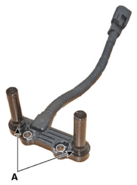

Repair Procedures: Installation
WARNING: This page is about a different variant/trim than selected.
- Install in the reverse order of removal.
NOTE:
- Before installing the input speed sensor, check the assembled state of the O-rings (A) and should apply gear oil to the surface of O-rings.
 Courtesy of HYUNDAI MOTOR AMERICA
|